TRL-1572 · Captured 7 October 2026 · Boxd Chromium
Superset setup: rendered evidence
This is not a Superset native app test.The public web app, official desktop screenshot, and native component fixture are separate evidence sources. No account, private token, or live host was used.
Public product boundary
The public app redirects to sign-in. The two captures show the actual unauthenticated page. The authenticated setup journey remains unavailable.
Official desktop relay screen
The official Remote Access guide supplies this image. It is a vendor screenshot, not an independently executed desktop session. The guide states that relay activation restarts the host and interrupts terminals.
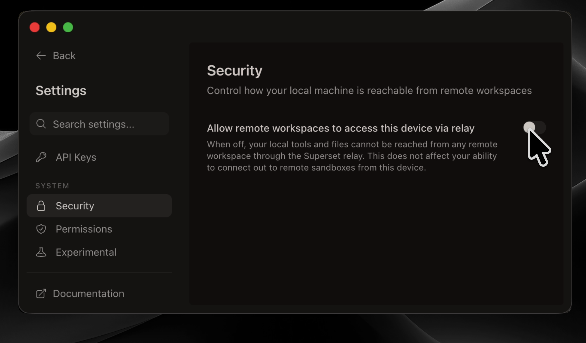
Official Superset screenshot: desktop relay accessExact native component, browser fixture
The fixture imports HomeConnectHostScreen, SetupStep, Button, Text, Icon, utility classes, theme CSS, and the English catalog from official source 9a50076c. Each original file matches its Git blob. The component markup, text, styles, and imported icon remain unchanged.
The fixture supplies the organization name and an empty-host query. Its controlled promise exposes Check again and Checking states. Haptics and analytics record no external action. The router and guide action record their destination. The native Stack toolbar returns no header in this browser fixture.
That exclusion means the screenshot shows the component body, not the full native screen. Native safe areas, iOS fonts, system bars, VoiceOver, real discovery, persistence, and successful host connection remain unverified. The 160-pixel case is narrow reflow evidence, not a claim of native Dynamic Type or browser 200% zoom.
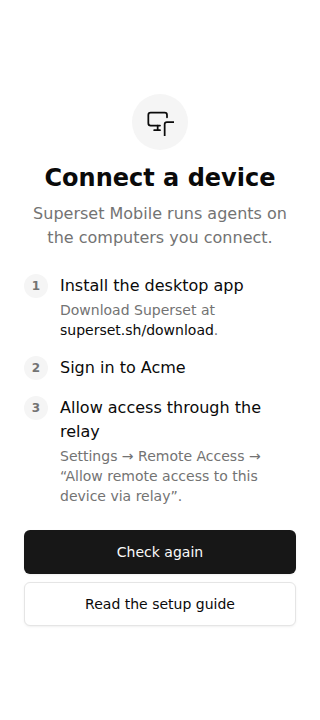
Official component fixture: light, 320 pixelsOfficial component fixture: light, Check again in progressOfficial component fixture: light, keyboard focus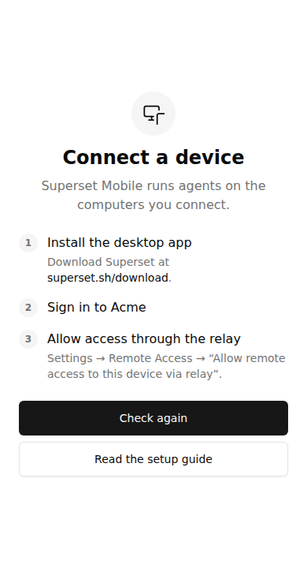
Official component fixture: light, 390 pixelsOfficial component fixture: dark, 320 pixelsOfficial component fixture: dark, Check again in progress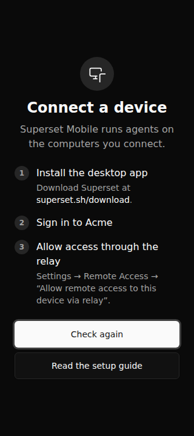
Official component fixture: dark, keyboard focus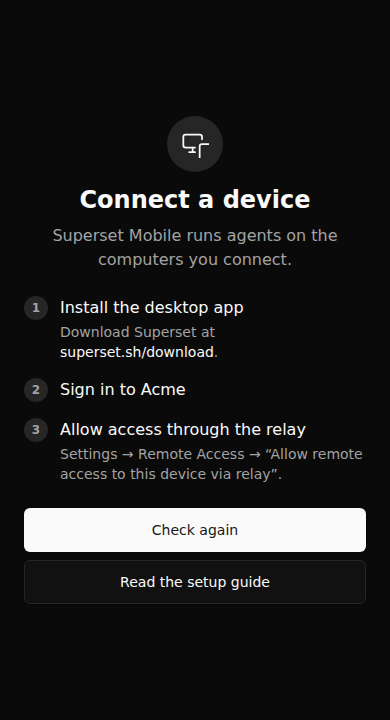
Official component fixture: dark, 390 pixelsNarrow text and wide layout
The long organization name is synthetic. Click an image to inspect it at its original size.
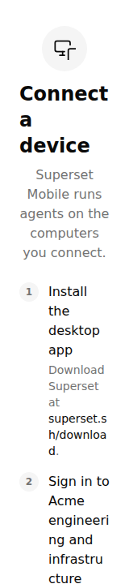
Official component fixture: light, 160 pixels, top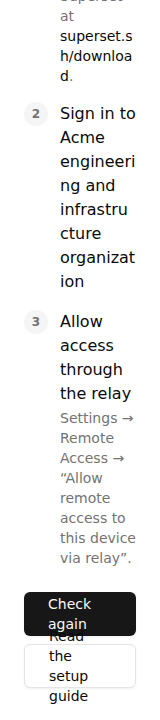
Official component fixture: light, 160 pixels, scrolled to the actions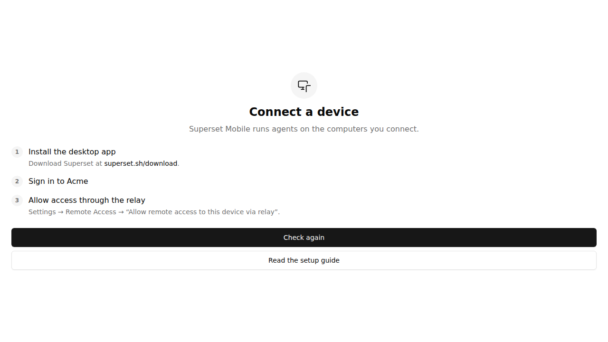
Official component fixture: light, 1280 pixels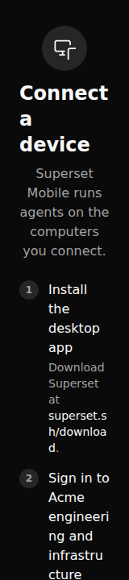
Official component fixture: dark, 160 pixels, top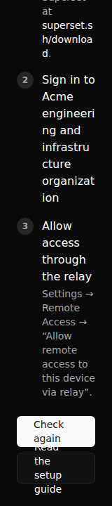
Official component fixture: dark, 160 pixels, scrolled to the actions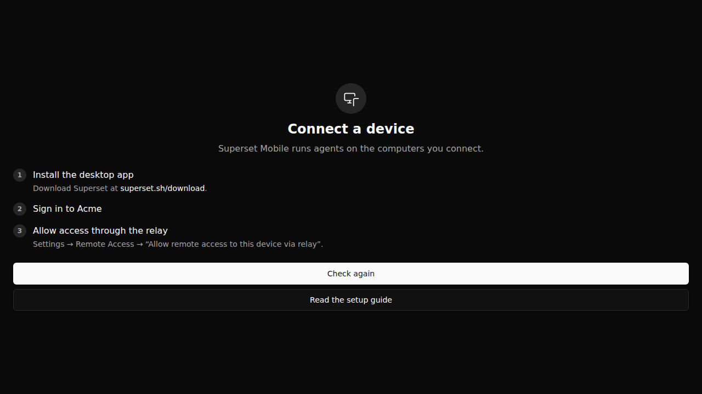
Official component fixture: dark, 1280 pixelsRecorded result and limits
All eight width/theme cases render without a page error or document overflow. Both 320-pixel actions measure 44 pixels high. Check again disables during the controlled promise and returns after completion. Read the setup guide records the official Remote Access URL.
The fixture does not prove error recovery, host discovery, success navigation, account authentication, or retained data. The public product does not provide those journeys without an account. This evidence supplies no superiority verdict.
Fixture results · Public page records · Exact source identities · Superset license
Supporting public captures
The mobile marketing page shows workspace, terminal, and diff previews. Those views do not establish the setup journey.
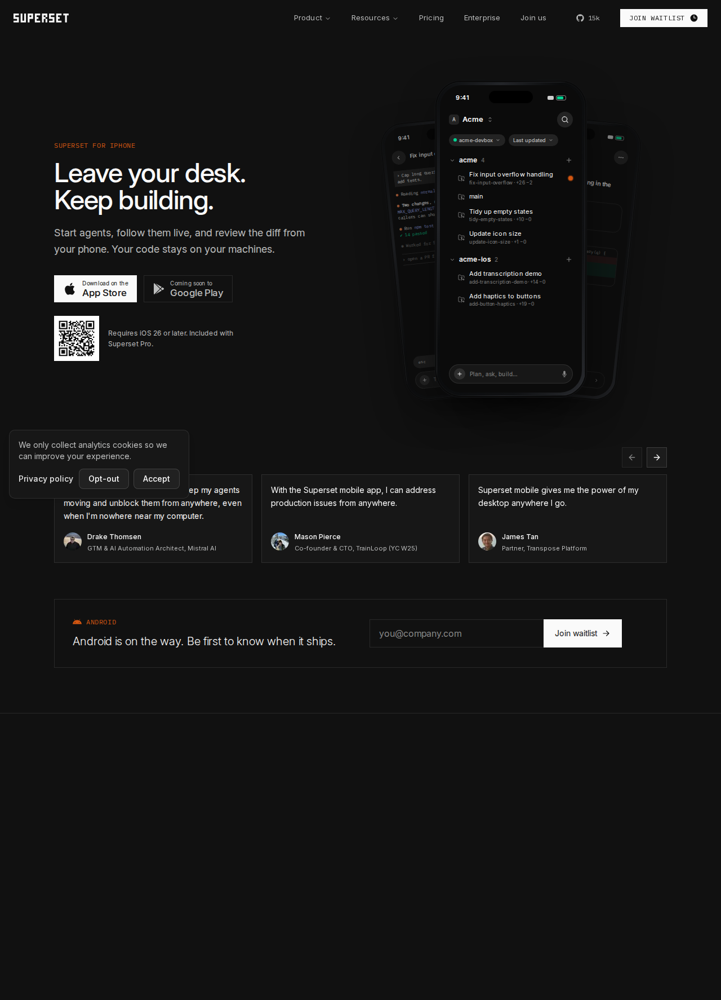
Official mobile marketing page, retained as context only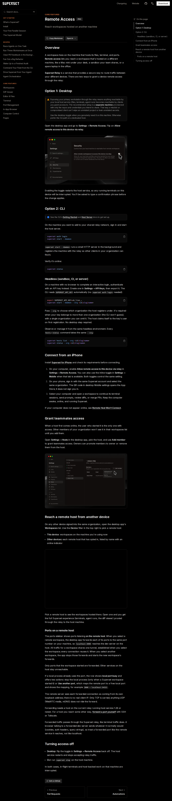
Official Remote Access documentation, captured from the public page